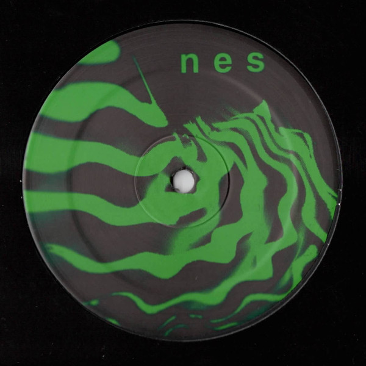
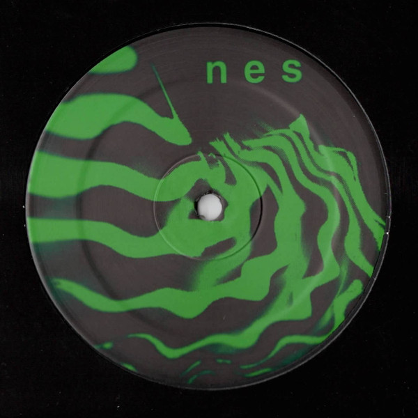
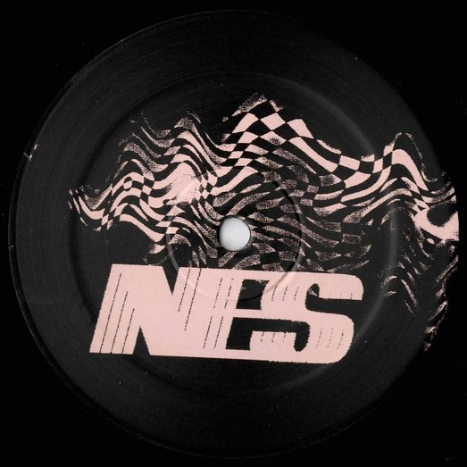
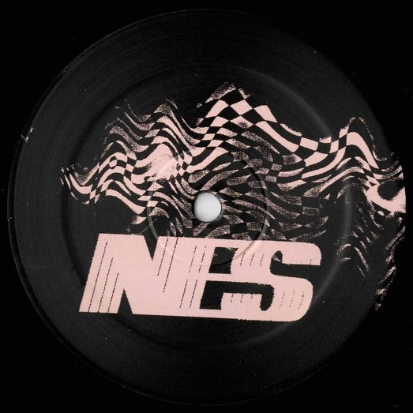

September 8, 2025
Nicklas and I are joining forces for the first time and playing a whole night together at Baggen, in Copenhagen. NESFEST is coming back with some more events in the future, so keep you’re eye out for them. Lots of house music coming out of the speakers on this friday! Also! I am lucky enough to get to play in Madrid at the end of this month, so if you are in the city, let me know. Peace!
September 8, 2025
Happy to say that London was a killer experience. Got to see my good friend, met some new, and played with everything I got, at both shows. Lots of love to both crews and to Pat. You can read about the trip via Will’s Phelt Magazine, which also has an hour recording of the set in London.

July 12, 2025
Summertime, summertime
Settling in with the new energies, conditions, jobs and transitions...eyyyy
Feeling inspired to take on new music projects. New NES releases have been set in motion, and I feel
really good about letting them go and run off to the world.
Kind and inspiring friends around makes it a very enjoyable process.
If you look (and click) on the poster, I've been invited to go to the UK and DJ some records, at the
start
of next month (London the 1st of August & Manchester on the 2nd). Really excited for both shows! Thanks
to
Jaime & Social Records Society, and also to Adam & And Beyond. I'll see you soon!
See you there?
Peace
May 27, 2025
So much fun! Bit rusty, but feels like I'm coming back to it. It definitely felt
good.
Shoutout to all the peeps that showed up for the early set. CPH! You have it in you to dance during the
day.
May 12, 2025
Monday started grey and slow. Picking up the pieces after a great party hosted by my
friends at Essence. N&C, u killed it!
It makes me happy to see my friends being passionate about their music.
These days are weird. Challanging and frustrating. Luckily I got the most amazing friends to remind me
of
life's wavy nature, and to give me perspective and closeness. I love you!
On a positive note. I've been invited to play a radioshow/blockparty at a nice event
hosted by Drift Radio.
It's on Satuday 17th of May. It starts at 2pm CEST. I'm on at 4pm, if you wanna tune in :]
May 8, 2025
Hello and Welcome. Excited to start journaling.

 

 
